4. 员工：安装 + 日常使用（约 10 分钟）
目前仅支持 MAC/Windows 环境安装。
4.1 装客户端（离线包）
企业私有部署的员工机通常连不上公网 —— 用运维发给你的个人版离线包安装（和 §2 集群离线包同一套路：解包 → --offline 装，物料自带、全程不联网）：
macOS / Linux：
tar -xzf aikey-personal_<版本>_mac_linux_<stamp>.tar.gz && cd aikey-personal_<版本>_mac_linux
sh local-install.sh --offline
source ~/.zshrc # 或 ~/.bashrc，让 PATH 立即生效--offline 会从包内 artifacts/ 装好 CLI + 本地代理 + 控制台（合规检测 / 降智检测一并装），不访问外网。
Windows：用 aikey-personal_<版本>_windows_<stamp>.zip，PowerShell 原生安装（无需 WSL）；详见包内 README 或 quickstart-personal。
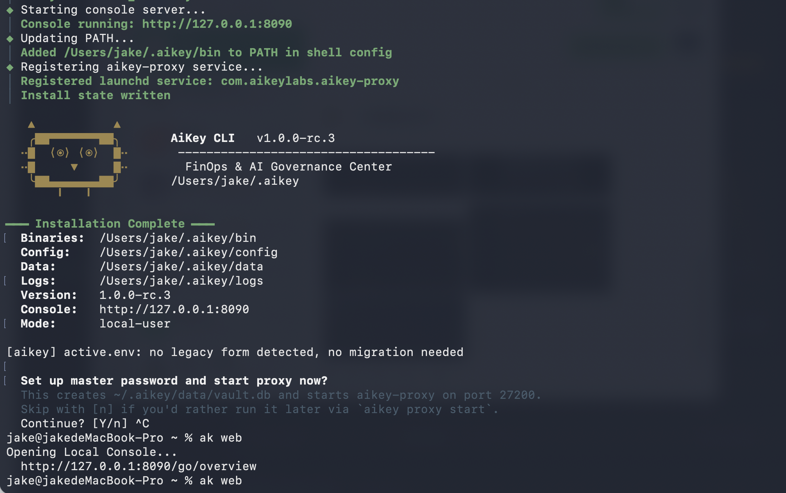
4.2 拿到能用的 Key
💻 Windows 用户请用 PowerShell：本节及后续的
aikey/claude命令都在 PowerShell 里运行（不要用旧的 CMD 命令提示符）。打开方式：开始菜单搜索 "PowerShell" 打开，或在文件夹里按住 Shift 右键选「在此处打开 PowerShell 窗口」。命令本身与截图（macOS 终端）一致，只是终端换成 PowerShell。
主推 · 连控制台领团队虚拟 KEY（form-①） —— 用管理员邀请你的那个邮箱登录：
aikey login --control-url http://<控制台地址>:3000 # 浏览器授权；这一步同时"认领席位"
aikey use # 上下箭头选刚分给你的虚拟 KEY；接集群自动选可用节点、配好工具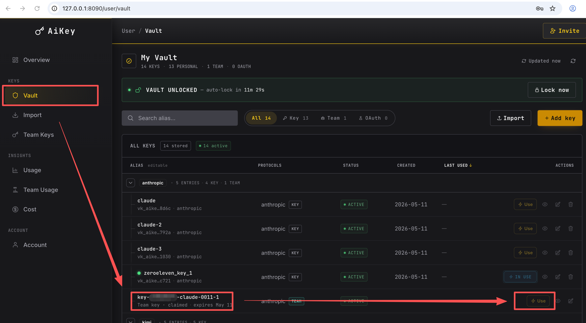
⚠ 注意：管理员"签发 KEY"前需要你先登录认领席位（§3.3 的关键顺序）。登录后没看到 KEY？让管理员确认已签发，再
aikey key sync同步一次。
用飞书 SSO 登录（form-① 的可选方式，管理员开启后）
如果管理员在控制面配置了飞书 SSO，aikey login 打开的登录页会在邮件登录下方多出一个 Continue with Feishu 按钮 —— 员工不用填邮箱、不用等激活邮件，用飞书身份直接登录。命令不变，还是上面那条 aikey login --control-url ...。
⚠ 前提：管理员需先按 成员 SSO 登录 在控制面配好飞书应用（一次性）。没配的话登录页只有邮件登录，不显示这个按钮。
浏览器打开登录页，邮箱表单下方多出 Continue with Feishu：
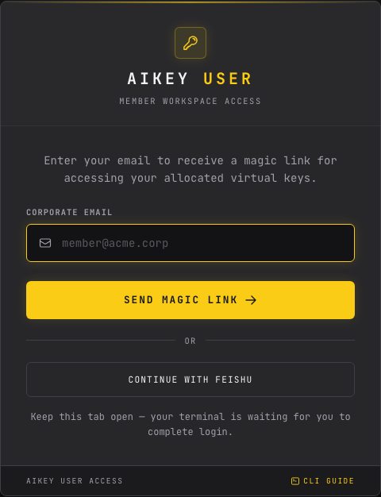
点它 → 跳到飞书自己的授权页扫码 / 确认授权（AiKey 全程不经手你的飞书账号密码）→ 授权完直接进控制台，中间没有邮箱表单、也不发邮件。第一次和以后每一次都一样。
授权返回后看到 Signed In（"已登录"），显示"以 XXX 身份经飞书登录"，随后自动跳进控制台（也可以直接点 Open Console）：
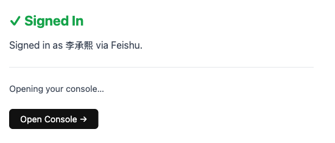
登录成功后分两种情况：
- 你还没有席位 → 控制台顶部出现一条可关掉的提示：「账号已就绪 —— 尚未分配席位」。这不是登录失败 —— 账号已经建好了（左下角能看到你的身份），只是还没有"工位"，所以密钥和额度是 0，其它页面照常能看。你会自动出现在管理员的「待分配席位」名单里（不用把邮箱报给他），管理员点一下分配席位（§3.3），你刷新页面即可用。
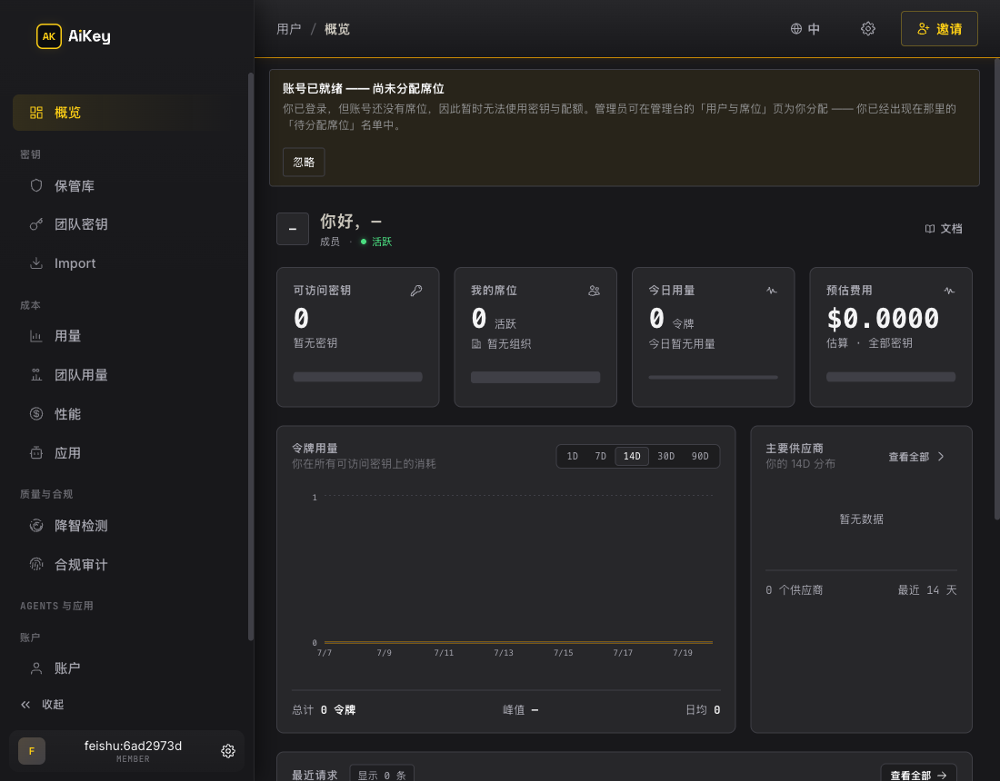
- 你已经有席位（管理员分配过，或开了自动开席） → 提示条消失，「我的席位」变成 1，立刻能用：终端里的
aikey login会自动拿到 Key，之后照上面主推流程aikey use选 Key 即可。
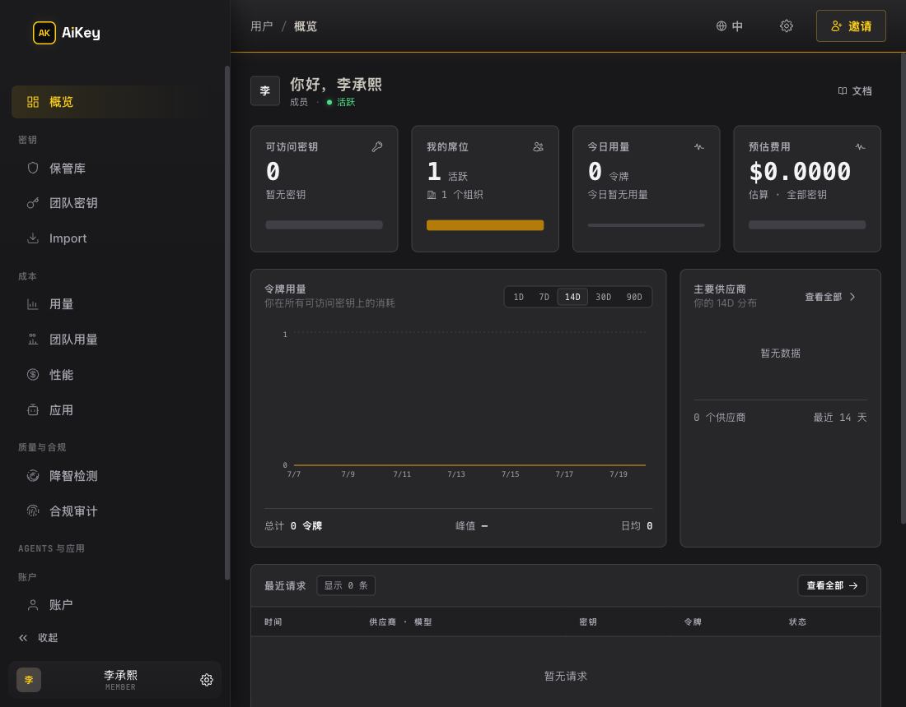
💡 飞书不返回邮箱是正常的：飞书的邮箱是可选字段，实测即使授予了读邮箱权限也基本不返回。这条登录链路不依赖邮箱 —— 登录、建账号、开席都不需要它。所以别指望"用飞书登录后管理员就能按邮箱找到我"，管理员是在「待分配席位」名单里按飞书姓名认你的（见 §3.3）。
⚠ 授权没过怎么办：在飞书页面拒绝授权、或登录链接过期 / 校验失败时，页面会明确报错 "SSO login could not continue" 并给一个 Try again 按钮；此时不会签发任何 Key/Token，邮件登录（form-①）也照常可用。
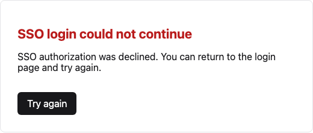
备选 · 也可以用自己的 Key（离线、不连服务端） —— 在 aikey web 的 Vault 页加，或用 CLI：
aikey add my-key && aikey use my-key # 自己的 API KEY，存进本地加密库，工具看不到真实密钥
aikey auth login claude # 或 codex / kimi_code —— 用 Claude Pro/Max、ChatGPT Plus 等订阅账号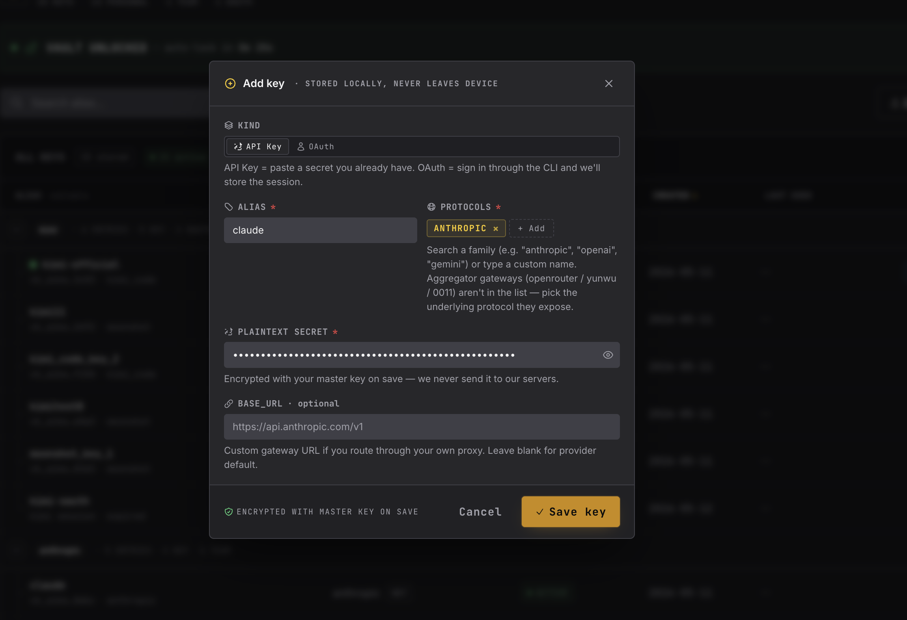
⚠ 注意：页面顶部出现 「Install hook」横幅时点一下安装 —— 它把 shell hook 写进你的 shell 配置，新开终端里
claude/codex/kimi才能自动认到当前 Key。
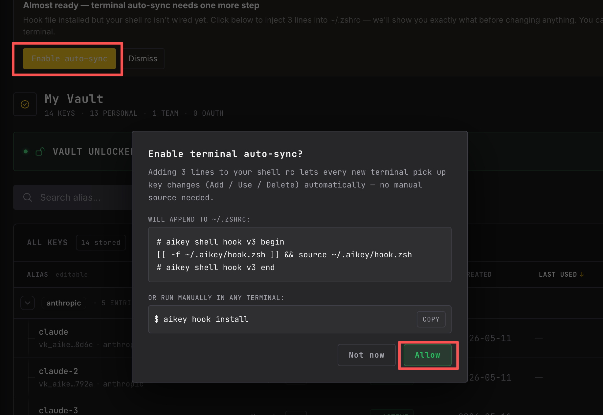
4.3 示例一：运行 claude，聊完看费用小票
打开一个新终端（让 hook 生效），直接用你常用的工具：
claude # 或 codex / kimi —— 本地代理自动注入 Key，无需手填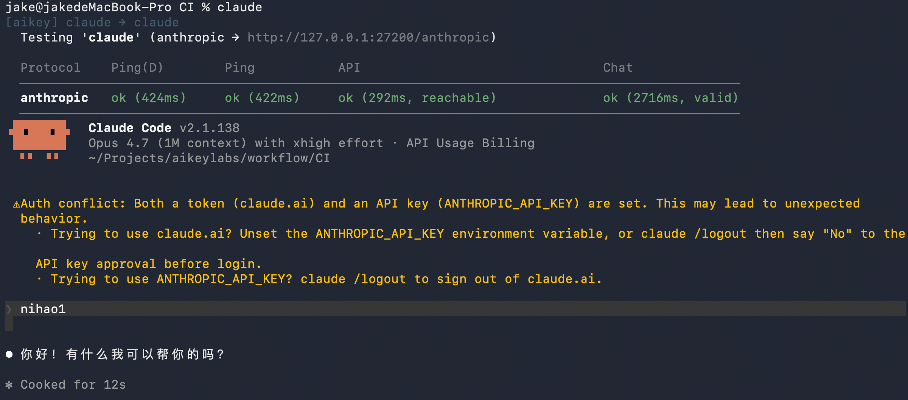
聊完退出会话后，终端会打印一份费用小票：本次 token 用量 + 估算费用 —— 不用等月底账单，实时把控成本。
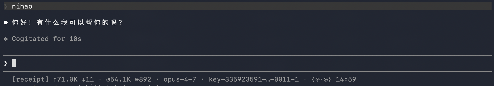
4.4 示例二：额度不足，不退出会话就切 Key
额度在长对话中途用完时，不用退出正在跑的 claude —— 另开一个终端切一下，运行中的会话下一次请求就用新 Key 继续：
aikey use <另一个 Key> # 全局切换；正在跑的会话无缝接上新 Key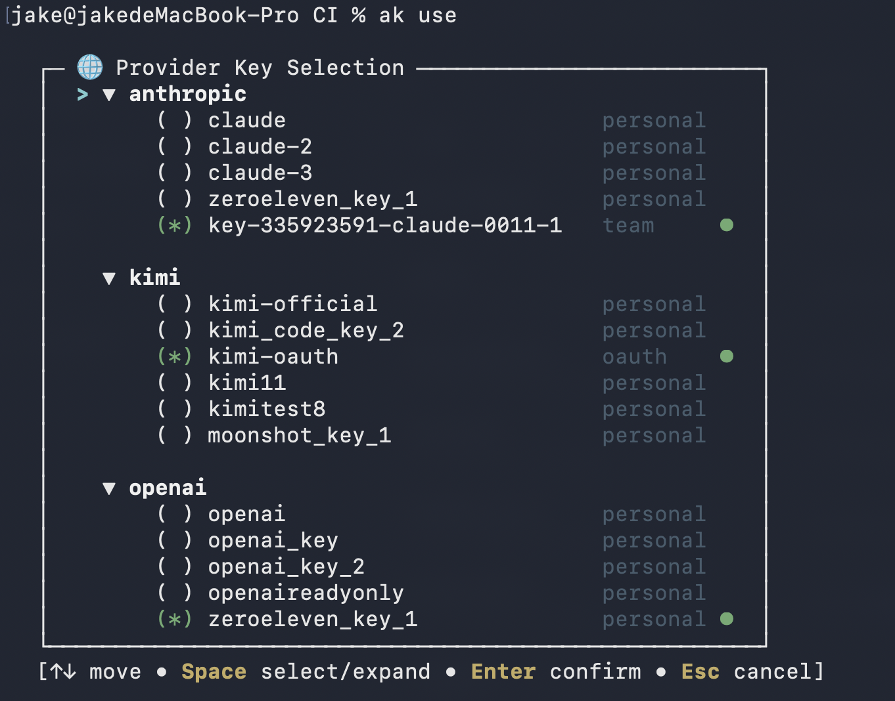
也可在
aikey web的 Vault 页点另一个 Key 设为当前。临时只在本终端切、关了就恢复，用aikey activate <Key>/aikey deactivate。
4.5 示例三：看用量统计
aikey web # 浏览器打开本机控制台 → Usage / Dashboard控制台按 Key / 账号 / provider 展示用量趋势 + token 结构（cache 占比、请求量、provider 分布），方便发布前后做费用复盘。
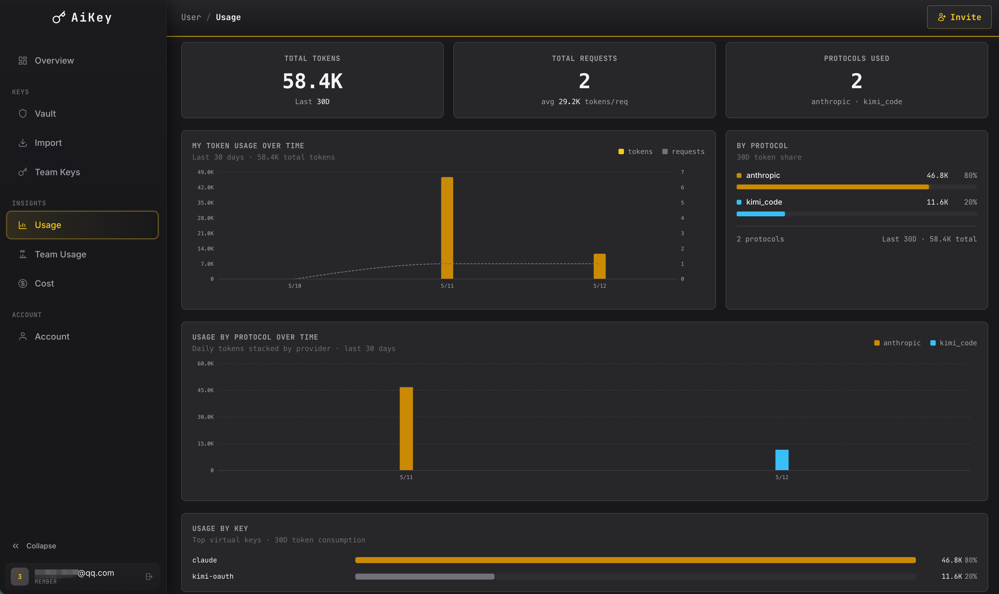
4.6 自检（出问题先跑这几条）
aikey doctor # 一键体检（CLI / 代理 / Vault / 网络 / 管道）
aikey test # 当前 Key 连通性：Ping → 代理 → API → Chat 四步
aikey web # 网页控制台看 Key 和用量完整命令与高级用法（第三方客户端接入、Trust Check 降智检测、Windows 安装等）：quickstart-personal。
本页由交付文档《快速开始 · §4 员工：安装 + 日常使用》在构建期生成 —— 文档更新后重新构建即为最新。